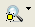

Standard Toolbar in Calibre RVE
The Standard
Toolbar is shown is common to all Calibre RVE applications.
Figure 1. Standard Toolbar in Calibre RVE

Toolbar Icon |
Description |
Equivalent Menu Selection |
|---|---|---|
|
Open database. Ctrl-click the open database button reloads the database, except in Calibre RVE for DFM, which does not have a reload database function. |
File > Open |
Erase highlights. |
Highlight > Clear Highlights |
|
 |
Set highlight options with the dropdown list. The icon that is displayed changes with the selection. |
Highlight menu, or Setup > Options > Highlighting |
|
Open the Options Tab in Calibre RVE. |
Setup > Options |